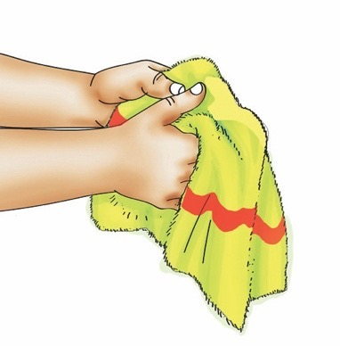
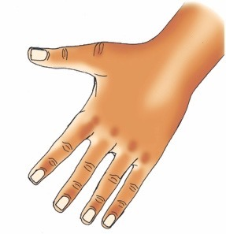

Fingernail questions, Activity 7, and Exercise 5

A pupil drying clean hands with a towel.

A hand with well-cut and cleaned fingernails.
I dry my hands using Well cut and cleaned a clean towel. fingernails.
Question
Why is it important to cut and wash your fingernails?
Activity 7
(a) Watch videos on the internet showing the steps for cutting and washing fingernails.
(b) Cut and wash your fingernails by following the steps you have learnt.
Exercise 5
1. Mention three (3) items used for cutting and washing fingernails.
2. Draw any one item you like to use when cutting your fingernails.